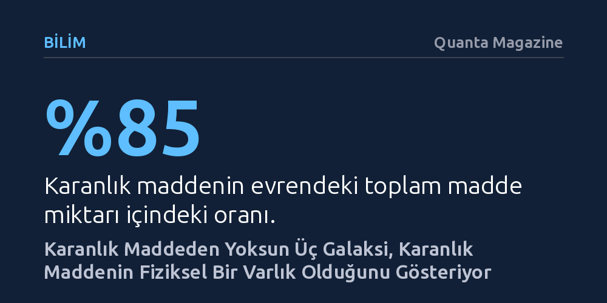

BILIM · Quanta Magazine · 2026-10-15
Karanlık maddeden neredeyse tamamen yoksun üç cüce galaksinin keşfi, bu maddenin yerçekimi kanunlarının bir yanılsaması değil, ayrıştırılabilen fiziksel bir varlık olduğunu gösteriyor. Kozmik bir çarpışmayla gazından kopan bu yapılar, alternatif yerçekimi teorilerini zora sokuyor.
Karanlık maddenin yokluğuyla kendini ele veren bu sıradışı galaksiler, evrenin en büyük gizeminin yerçekimi kurallarındaki bir yanılgıdan değil, henüz keşfedilmemiş somut bir parçacıktan kaynaklandığını ortaya koyuyor.

Dünya'dan yaklaşık 65 milyon ışık yılı uzaklıkta yer alan üç gök ada, alışılagelmiş galaksi manzaralarından tamamen farklı bir yapı sergiliyor. Sarmal kolları ışıl ışıl parlayan görkemli yapılar yerine, uzay boşluğunda neredeyse saydam, soluk ve hayaletimsi bir sis bulutunu andırıyorlar. DF2, DF4 ve DF9 olarak kataloglanan bu dağınık cüce galaksiler, gökbilimcileri yalnızca silik görünümleriyle değil, barındırdıkları kütlenin tuhaflığıyla da şaşkına çevirdi.
Modern astrofizik modellerine göre galaksilerin bir arada durabilmesi, görünmez bir kütleçekimsel yapıştırıcıya bağlıdır. Evrendeki toplam maddenin yaklaşık yüzde 85'ini oluşturan karanlık madde, olağan gaz ve tozu kendine çekerek yıldız oluşumunu tetikler ve hızla dönen galaksilerin uzaya savrulmasını önler. Ancak Hawaii'deki Keck Gözlemevi gibi gelişmiş teleskoplarla bu üç galaksideki yıldızların hareketleri izlendiğinde akılalmaz bir durum ortaya çıktı: Her üç galaksi de neredeyse hiçbir karanlık madde içermiyordu. İlk olarak 2018'de DF2'nin, ardından DF4'ün ve nihayet 2026'da DF9'un yalnızca sıradan maddeden ibaret olduğunun belirlenmesi, gökbilimin temel kabullerini sarstı.
Birbirine komşu bu üç hafif galaksinin uzayda düz bir hat boyunca dizilmiş olması, araştırmacıları ortak bir geçmiş aramaya yöneltti. 2026 yılının Haziran ayında yayımlanan kapsamlı bir çalışma, bu durumu geçmişte yaşanmış şiddetli bir galaktik çarpışmayla açıklıyor. İki olağan galaksinin kafa kafaya çarpışması, sıradan madde ile karanlık maddenin birbirinden bütünüyle kopmasına yol açmış olabilir.
Bu ayrışmanın gizi, doğanın temel kuvvetlerinin işleyişinde yatıyor. Karanlık madde evrende yalnızca kütleçekim kuvvetiyle etkileşime girerken, gaz ve toz bulutlarından oluşan sıradan madde elektromanyetizma dahil tüm temel kuvvetleri hisseder. İki galaksi çarpıştığında, karanlık madde kütleleri hiçbir sürtünmeye ya da dirence maruz kalmadan birer hayalet gibi birbirinin içinden geçip yollarına devam etti. Buna karşılık gaz ve toz bulutları birbirine çarparak büyük bir kargaşa içinde yavaşladı, sıkıştı ve geride kaldı. İşte karanlık maddesinden soyulmuş bu artık gaz kütleleri, zaman içinde yeni yıldızlar üretmekte zorlanan DF2, DF4 ve DF9 galaksilerine dönüştü.
Bu süreç, yaklaşık 3,8 milyar ışık yılı uzaklıktaki meşhur Mermi Kümesi'nde (Bullet Cluster) gözlemlenen kozmik enkaza büyük benzerlik gösteriyor. James Webb Uzay Teleskobu'nun incelediği Mermi Kümesi'nde de benzer bir çarpışma sonucunda gaz ile kütleçekim merkezinin ayrıştığı saptanmıştı. Ancak DF galaksi üçlüsünde bu ayrışma çok daha temiz gerçekleşti ve geride karanlık maddeden bütünüyle yoksun bağımsız cüce galaksiler bıraktı.
Karanlık maddenin neredeyse bir asırdır doğrudan saptanamamış olması, bazı bilim insanlarını alternatif kuramlar geliştirmeye sevk etmişti. Bunların başında 1983 yılında ortaya atılan Değiştirilmiş Newton Dinamiği (MOND) geliyor. MOND savunucuları, evrende görünmeyen gizemli bir madde bulunmadığını, bunun yerine son derece zayıf ivmelenmelerde yerçekimi yasalarının bildiğimizden farklı çalıştığını ileri sürüyorlardı. Bu yaklaşıma göre dönen galaksilerin dağılmaması, fazladan bir maddenin varlığından değil, yerçekimi kuvvetinin uzak mesafelerde beklenenden daha yavaş azalmasından kaynaklanıyordu.
Fakat karanlık maddesi olmayan bu üç yeni galaksi, MOND gibi alternatif yerçekimi kuramlarını derin bir çıkmaza sokuyor. Çünkü yerçekimi evrensel bir doğa yasasıysa, onun etkisi belirli galaksiler için devreden çıkamaz; bir kanunu bazı gök adalarda 'açıp' bazılarında 'kapatamazsınız'. Eğer DF2, DF4 ve DF9'da yerçekimi farklı çalışmıyorsa ve galaksiler karanlık maddeden yoksun oldukları için yıldız üretmekte zorlanıyorsa, bu durum karanlık maddenin yerçekiminin bir cilvesi değil, taşınabilen ve ayrıştırılabilen bağımsız bir fiziksel töz olduğunu gösterir. Fizikçi Shyam Balaji'nin ifade ettiği gibi, 'Karanlık maddenin yokluğu, ironik bir biçimde onun varlığının bir kanıtı' niteliğini taşımaktadır.
Tüm astrofizikçiler bu hayalet galaksilerin bir çarpışmayla doğduğu senaryosunu kayıtsız şartsız benimsemiyor. University College London'dan Kinwah Wu, bu üçlüde büyük bir galaktik çarpışmanın ardından kalması beklenen akışkan ve dalgalı gaz kalıntılarının bulunmadığına dikkat çekiyor. Wu'ya göre bu galaksiler, çok daha büyük ve yoğun bir galaksi kümesinin içinden hızla geçerken güçlü gelgit etkileri sonucunda karanlık maddelerinden soyulmuş olabilir.
Değiştirilmiş yerçekimi teorilerinin önde gelen savunucularından Stacy McGaugh ise oluşum mekanizması kesin olarak kanıtlanmadıkça karanlık maddenin doğası üzerine kesin hüküm verilemeyeceği görüşünde. Çarpışma modelini makul ancak istisnai bir varsayım olarak değerlendiren McGaugh, bu durumun başka süreçlerle de açıklanabileceğini savunarak temkinli duruşunu koruyor.
Buna karşın astronomi dünyasının büyük bölümü, 2015 yılında LIGO'nun kütleçekimsel dalgaların uzayda ışık hızıyla yayıldığını doğrulamasıyla zaten ağır darbe alan MOND'un bu yeni bulgularla daha da zayıfladığı konusunda hemfikir. Bu üç hayalet galaksi karanlık maddenin tam olarak ne olduğunu —steril nötrinolar mı, zayıf etkileşimli parçacıklar mı yoksa ilksel kara delikler mi— henüz aydınlatmasa da, onun gerçek bir varlık olduğuna dair şimdiye kadarki en berrak ipuçlarını sunuyor.